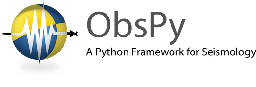

Appendix 3 – Using ObsPy¶
ObsPy is a python based seismology toolbox, which can be used to deal with seismic waveform data and earthquake catalogue information. The toolbox can read a large range of seismic data formats and perform a large range of processing applications such as filtering the data, and misfit calculation.
Many of the pre- and post-processing applications within the portal use python and ObsPy. The toolbox can also be used to format input data, for instance producing an earthquake catalogue in quakeML format.

Figure A3.1: The ObsPy logo
A3.1 Installing Python and ObsPy
Installing Python: Depending on your operating system this can be installed through the software manager. Alternatively the latest version of python can be installed here,
https://www.python.org/downloads
You will also require to specific python libraries that can be installed from GitHub as described below.
Installing anaconda: if you do not have super user privalages on your machine then both ObsPy and dispel4py (see appendix two) can be installed using Anaconda, a package to manage and deploy Python packages. Anaconda can be installed on mac and Linux operating systems as described here,
http://docs.continuum.io/anaconda/install.html
Installing ObsPy: Make sure you have a C and fortran compile installer. You can then install ObsPy with the command,
conda install -c obspy obspy
or, if you have not installed anaconda,
sudo pip install obspy
Full instructions can be found at
A3.2 Other dependencies you need to run ObsPy are listed below;
numPy – a toolbox for doing numerical applications in python.
sudo apt-get install python-numpy
SciPy – a generic scientific programming toolbox for applications in python.
sudo apt-get install python-scipy
Additionally, in order to do the plotting parts of the tutorial below you will need to install the following;
Matplotlib – a toolbox for creating plots and figures for python applications. Figures are customised very easily and intuitively, and can be exported in a number of different. Files can also be exported easily to a .mat file for Matlab users.
sudo apt-get install python-matplotlib
A3.3 Using ObsPy
A full online python tutorial, that covers everything from a basic introduction to ObsPy, up to more advanced applications such as developing an automated processing workflow, can be found at the link below;
http://docs.obspy.org/tutorial/
Figure A3.2: Z-component data plotted using ObsPy. Image re-produced from
http://docs.obspy.org/tutorial/code_snippets/reading_seismograms.html